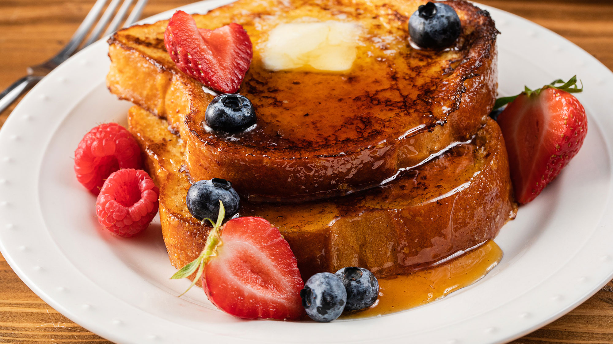

How To Make French Toast
French toast is a tasty way to start the day!
Learn how to make French Toast to make your mornings just a little sweeter.

Ingredients:
- 1 egg
- 1 teaspoon vanilla extract
- 1/2 teaspoon cinnamon
- 1/4 cup milk
- 4 slices of bread
- Milk
Instructions:
- Mix egg, vanilla & cinnamon in dish. Stir in milk.
- Dip bread in egg mixture, turning to coat both sides evenly.
- Cook bread slices on lightly greased nonstick griddle or skillet on medium heat until browned on both sides. Serve with Easy Spiced Syrup (recipe follows), if desired./li>
- Add teaspoon of Vanilla Extract and 1/4 teaspoon of Ground Cinnamon to 1 cup pancake syrup. Stir well to mix.
View the original recipie here